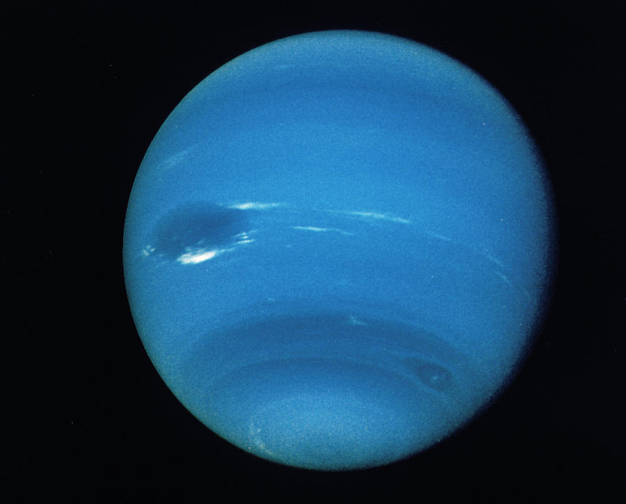

The Solar System is the gravitationally bound system of the Sun and the objects that orbit it. It was formed 4.6 billion years ago when a dense region of a molecular cloud collapsed,forming the Sun and a protoplanetary disc. The Sun is an ordinary main sequence star that maintains a balanced equilibrium by the fusion of hydrogen into helium at its core, releasing this energy from its outer photosphere.
Mercuryis the first planet from the Sun and the smallest in the Solar System. In English, it is named after the Roman god Mercurius (Mercury),god of commerce and communication, and the messenger of the gods. Mercury is classified as a terrestrial terrestrial planet, with roughly the same surface gravity as Mars. The surface of Mercury is heavily cratered, as a result of countless impact events accumulated over billions of years. Its largest crater, Caloris Planitia, has a diameter of 1,550 km (960 mi) and one-third the diameter of the planet (4,880 km or 3,030 mi). Similarly to the Earth's Moon, Mercury's surface displays an expansive rupes system generated from thrust faults and bright ray systems formed by impact event remnants.
 /
/Venus is the second planet from the Sun. It is a terrestrial planet and is the closest in mass and size to its orbital neighbour Earth.Venus is notable for having the densest atmosphere of the terrestrial planets, composed mostly of carbon dioxide with a thick, global sulfuric acid cloud cover. At the surface it has a mean temperature of 737 K (464 °C; 867 °F) and a pressure of 92 times that of Earth's at sea level. These conditions are extreme enough to compress carbon dioxide into a supercritical state close to Venus's surface.
 /
/Earththird planet from the Sun and the fifth largest planet in the solar system in terms of size and Mars . Its single most outstanding feature is that its near-surface environments are the only places in the universe known to harbour life. It is designated by the symbol ♁. Earth’s name in English, the international language of astronomy, derives from Old English and Germanic words for ground and earth, and it is the only name for a planet of the solar system that does not come from Greco-Roman mythology. Earth is part of the "observable universe," the region of space that humans can actually or theoretically observe with the aid of technology. Unlike the observable universe, the universe is possibly infinite. Examine the observable universe's place within the whole universe Examine the observable universe's place within the whole universe Learn about defining and measuring the observable universe within the “whole” universe. See all videos for this article Since the Copernican revolution of the 16th century, at which time the Polish astronomer Nicolaus Copernicus proposed a Sun-centred model of the universe (see heliocentric system), enlightened thinkers have regarded Earth as a planet like the others of the solar system. Concurrent sea voyages provided practical proof that Earth is a globe, just as Galileo’s use of his newly invented telescope in the early 17th century soon showed various other planets to be globes as well. It was only after the dawn of the space age, however, when photographs from rockets and orbiting spacecraft first captured the dramatic curvature of Earth’s horizon, that the conception of Earth as a roughly spherical planet rather than as a flat entity was verified by direct human observation. Humans first witnessed Earth as a complete orb floating in the inky blackness of space in December 1968 when Apollo 8 carried astronauts around the Moon. Robotic space probes on their way to destinations beyond Earth, such as the Galileo and the Near Earth Asteroid Rendezvous (NEAR) spacecraft in the 1990s, also looked back with their cameras to provide other unique portraits of the planet

Mars is the fourth planet from the Sun. The surface of Mars is orange-red because it is covered in iron(III) oxide dust, giving it the nickname "the Red Planet".[21][22] Mars is among the brightest objects in Earth's sky and its high-contrast albedo features have made it a common subject for telescope viewing. It is classified as a terrestrial planet and is the second smallest of the Solar System's planets with a diameter of 6,779 km (4,212 mi). In terms of orbital motion, a Martian solar day (sol) is equal to 24.5 hours and a Martian solar year is equal to 1.88 Earth years (687 Earth days). Mars has two natural satellites that are small and irregular in shape: Phobos and Deimos.

Jupiter the most massive planet of the solar system and the fifth in distance from the Sun. It is one of the brightest objects in the night sky; only the Moon, Venus, and sometimes Mars are more brilliant. Jupiter is designated by the symbol ♃. When ancient astronomers named the planet Jupiter for the Roman ruler of the gods and heavens (also known as Jove), they had no idea of the planet’s true dimensions, but the name is appropriate, for Jupiter is larger than all the other planets combined. It takes nearly 12 Earth years to orbit the Sun, and it rotates once about every 10 hours, more than twice as fast as Earth; its colourful cloud bands can be seen with even a small telescope. It has a narrow system of rings and 92 known moons, one larger than the planet Mercury and three larger than Earth’s Moon. Some astronomers speculate that Jupiter’s moon Europa may be hiding an ocean of warm water—and possibly even some kind of life—beneath an icy crust.
Saturn occupies almost 60 percent of Jupiter’s volume but has only about one-third of its mass and the lowest mean density—about 70 percent that of water—of any known object in the solar system. Hypothetically, Saturn would float in an ocean large enough to hold it. Both Saturn and Jupiter resemble stars in that their bulk chemical composition is dominated by hydrogen. Also, as is the case for Jupiter, the tremendous pressure in Saturn’s deep interior maintains the hydrogen there in a fluid metallic state. Saturn’s structure and evolutionary history, however, differ significantly from those of its larger counterpart. Like the other giant, or Jovian, planets—Jupiter, Uranus, and Neptune—Saturn has extensive systems of moons (natural satellites) and rings, which may provide clues to its origin and evolution as well as to those of the solar system. Saturn’s moon Titan is distinguished from all other moons in the solar system by the presence of a significant atmosphere, one that is denser than that of any of the terrestrial planets except Venus.

Uranus is the seventh planet from the Sun. It is a gaseous cyan-coloured ice giant. Most of the planet is made of water, ammonia, and methane in a supercritical phase of matter, which in astronomy is called 'ice' or volatiles. The planet's atmosphere has a complex layered cloud structure and has the lowest minimum temperature of 49 K (−224 °C; −371 °F) out of all the Solar System's planets. It has a marked axial tilt of 82.23° with a retrograde rotation period of 17 hours and 14 minutes. This means that in an 84-Earth-year orbital period around the Sun, its poles get around 42 years of continuous sunlight, followed by 42 years of continuous darkness.

The NEPTUNE Ocean Observatory project is part of Ocean Networks Canada which is a University of Victoria initiative. NEPTUNE is the world's first regional-scale underwater ocean observatory that plugs directly into the Internet.[1] NEPTUNE is the largest installation on the Ocean Networks Canada network of ocean observatories. Since December 2009, it has allowed people to "surf" the seafloor while ocean scientists run deep-water experiments from labs and universities around the world. Along with its sister project, VENUS, NEPTUNE offers a unique approach to ocean science. Traditionally, ocean scientists have relied on infrequent ship cruises or space-based satellites to carry out their research, while the NEPTUNE project uses a remotely operated crawler.[1]
Pluto(minor-planet designation: 134340 Pluto) is a dwarf planet in the Kuiper belt, a ring of bodies beyond the orbit of Neptune. It is the ninth-largest and tenth-most-massive known object to directly orbit the Sun. It is the largest known trans-Neptunian object by volume, by a small margin, but is less massive than Eris. Like other Kuiper belt objects, Pluto is made primarily of ice and rock and is much smaller than the inner planets. Pluto has roughly one-sixth the mass of Earth's moon, and one-third its volume.

{kind=link}
{kind=link}